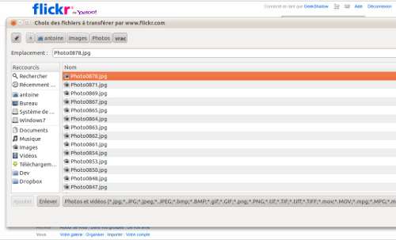

4 avril 2011
Bug du sélecteur de fichiers dans Gnome/GTK avec Flickr
Un truc qui m'énerve dans Gnome/GTK (utilisateurs Ubuntu notamment), c'est ce bug qui lorsque l'on utilise l'outil d'import de photos sur Flickr affiche une fenêtre trop grande pour la sélection des fichiers.
Concrètement, le site de Flickr affiche tous les types d'images et de vidéos compatibles qui peuvent être importées, seulement la fenêtre de sélections des fichiers se redimensionne pour afficher tous ces types sur une seule ligne et donc décale aussi les boutons OK et Annuler qui ne sont pas accessibles à moins de déplacer la fenêtre car le redimensionnement est impossible.

Je suis remonté à la source et c'est donc bel et bien un bug de Gnome/GTK (et non pas le navigateur comme j'ai pu le vérifier). Ce bug est connu et possède déjà un patch prêt depuis le 14 octobre 2009, mais il n'a toujours pas été inclu ! Vu que c'est plutôt agaçant, j'ai fait un petit script Greasemonkey (Compatible Firefox/Chrome) qui permet de contourner le problème en proposant par défaut tous les types de fichiers possibles (en affichant *.*). Le script est disponible sur le site userscripts.org. Une fois installé, vous pouvez redimensionner la fenêtre et plus de problèmes :) A noter que Flickr utilise encore un module en Flash pour permettre la sélection multiples de fichiers, alors quel la plupart des navigateurs modernes proposent l'envoi multiples de fichiers. À propos de navigateur, petite piqure de rappel : Mozilla Firefox 4.0 est sorti ! Pensez à mettre à jour votre version ou à le télécharger si vous ne l'utilisez toujours pas !
Commentaires 3